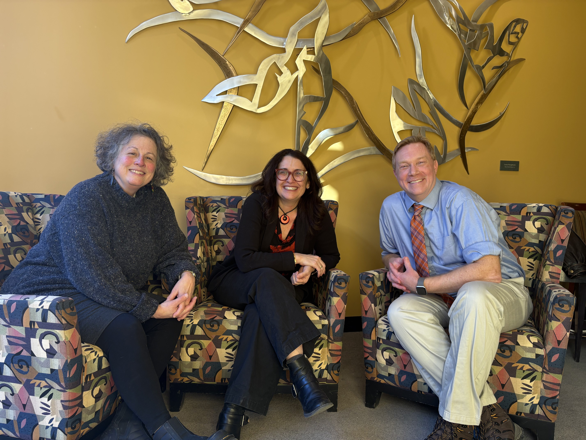
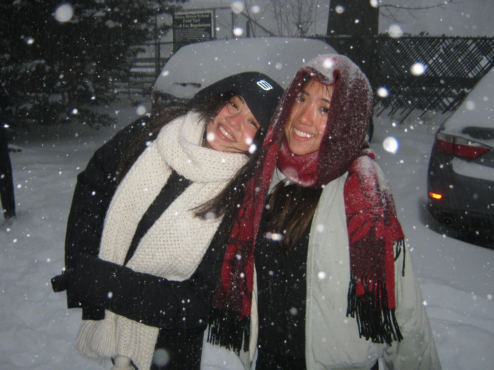

For a few short days before Valentine’s Day, campus transforms. Bruno
walks through the Blue Room handing out roses and paper-cut hearts
adorn the building windows. One word enters many people’s minds: love.
Although the holiday is most often a celebration of romance, there is
also another love to be celebrated: friendship. The Herald spoke to
Brown students and faculty about what platonic love looks like for
them.
‘A homey place’: Emily Hipchen MA’20, Jonathan Readey and Ravit
Reichman
Emily Hipchen MA’20, Jonathan Readey and Ravit Reichman, in addition
to their positions as English professors, are also proud members of
the “Without a Paddle Club,” which started during the pandemic.
The three-membered club gathered virtually every Wednesday night to
indulge in an episode of Schitt’s Creek, despite the physical
isolation.
Of the dynamic trio, Reichman was the first to arrive at Brown in
2003, followed by Readey in 2009. Readey says that Reichman was one of
the first people he had met at Brown, adding that she was “so
friendly” and made Brown feel like “a homey place.”
Reichman and Readey had a lot in common — they were both trained in
modernist literature and had offices on the same hallway, Midwestern
roots, kids around the same age and an hour commute from Massachusetts
— but their close friendship blossomed when they began to teach
together.
As the director of graduate studies for the Department of English at the
time, Reichman asked Readey to co-teach the pedagogy class he had
historically taught.
“It was awesome because you learn a lot about a person when you’re
teaching with them,” Reichman said. “You see what lights them up in
that context, what they care about, how they think with others.”
Last summer, Readey and Reichman continued the tradition and co-taught
a summer course in London. The course was both online and in-person in
London, and the two “basically lived with (their) students in a dorm
in London for three weeks,” Reichman said. “It was amazing.”
Hipchen, the newest addition to the trio, recalled visiting Readey’s sports writing class in 2020, where she found herself amazed by Readey’s class
of excited students and fervent discussion.
It began to snow as she left, and Readey insisted to Hipchen that the
weather in Providence was usually nicer. It was “a very (Readey) thing
to say, because, frankly, it’s not,” Hipchen added. Even in the cold,
Hipchen remembers Readey as the “most warm, most friendly, most
accepting and facilitating person (she has) literally ever met.”
Their friendship is not confined to the boundaries on campus. Readey
once participated in a flash mob for Reichman’s son’s Bar Mitzvah,
dancing to a song with rewritten words from “Carrying the Banner” from
the musical “Newsies.”
During the pandemic, Hipchen sat on a call with Readey for hours,
helping him browse for cars on Carvana, an online used car retailer.
They settled on the “silver surfer,” his now beloved Honda CRV.
The trio also cultivates community beyond themselves.
Readey said that Hipchen is “always looking for ways to build
community, not just with our friendship — the three of us — but with
so many people across the department, across Brown, and the same thing
for Ravit.”
In the aftermath of the Dec. 13 mass shooting, Reichman brought hot chocolate
and cookies to the English department’s lounge as the trio, joined by
Hipchen’s dog Darby, gathered to provide a space for students.
“I felt like, you know, it was going to be okay, even if it wasn’t
going to be okay because of the way in which we could meet that moment
in that particular way,” Hipchen said.
To Reichman, a good friend is someone who you can be “very real” with.
“I feel like myself around them, and I feel like I can be vulnerable
around them,” she said. “These are the people who show up for you,”
Reichman said.
“Life isn’t the office,” Reichman said, but “I feel lucky to work with
people I love, and I don’t take that for granted for a second.”

From left to right: English professors Emily Hipchen MA’20, Jonathan Readey and Ravit
Reichman
Photo by Maxwell Zhang | The Brown Daily Herald
The matching ‘Bob Dylan jacket’: Grace
Gongoleski ’27 and Lydia Fantaye ’27
Grace Gongoleski ’27 and Lydia Fantaye ’27 met in the hubbub of their
first semester, as many friends do, but didn’t speak one-on-one until
their second semester, when their mutual friend reintroduced them in
line at Andrews.
“I remember thinking, ‘Oh my god, she’s so lit to talk to,’”
Gongoleski said. “I just felt like we really kind of clicked.”
They chatted about class — at the time, they both thought they were
studying biomedical engineering. Since then, they’ve both switched to
applied mathematics-biology.
The two found camaraderie in shared coursework. “It was easier to
continue, I was like ‘Okay, somebody else is doing this,’” Fantaye
said.
During sophomore year, “I feel like we ended up doing a lot of things
together,” Fantaye said. “I couldn’t imagine doing them without
her.”
They bonded over their shared music taste — Fantaye is a big fan of
Bob Dylan, and Gongoleski is a big fan of Jeff Buckley. Togther, they saw Bob
Dylan in concert and went up to Boston to see
a documentary about Jeff Buckley on the big screen.
Gongoleski has a tan corduroy jacket she calls her “Bob Dylan jacket,”
and Fantaye, after asking Gongoleski first, got a matching one. They
have multiple identical pieces of clothing — one day, they ran into
one another and found themselves wearing the same outfit.
Together, they have also planned a hypothetical band. One of their
potential song names, “Stop and Listen to the Windmills,” calls to a
summer drive through Johnston where the two indulged in shared music
and windmills as they passed by.
Besides music tastes, their vocabulary has melded together as well.
“Don’t fret,” a favorite phrase of Fantaye’s, has been adopted into
Gongoleski’s daily speech.
This year, they’re not only roommates, but bunkmates as well. Although
the plan to bunk their beds started out as a joke, the two got pins from the Office of
Residential Life and stacked their beds. A top bunker all her life,
Gongoleski fit well with Fantaye, who chose the bottom for fear of
falling.
The pair will be living together again next year and hope to attend many more concerts together in the
future.
“I’m so grateful that we met each other,” Gongoleski said.

From left to right: Grace Gongoleski ’27 and Lydia Fantaye ’27
Photo by Jake Parker | The Brown Daily Herald
‘Telepathically’ connected: Dylan Lai
’27 and Karen Chien ’27
Dylan Lai ’27 and Karen Chien ’27 met during their first week of Brown classes in the
Petteruti lounge.
Chien was working on a problem set with one of their mutual friends.
Lai remembered thinking that she was “really studious,” but they
didn’t speak until a group Ivy Room dinner a short while later.
They met again in Keeney Quadrange, where they both lived their first
year. Lai often walked around the quad between Everett-Poland and
Archibald-Bronson at night, and one evening Chien happened to join
him. They then walked to the Arnold lounge, a room that would come to
host many late night chats.
After that, they started to do homework together — they both study
biomedical engineering and have most of the same classes — and get
meals together. They found similarities with each other, from their
upbringings to their sense of humor. One day when Chien skipped lunch one day,
Lai also happened to skip lunch.
“We had every meal together, so much so that when I skipped a meal I
was pretty certain that we both did,” Chien added.
Their friendship returned to Keeney as well: They bought plants together at a flea market by the Providence river, and Chien would sit outside in the quad so that her plant — which she called Lana, named for their shared favorite artist, Lana Del Ray — could get sunlight. .
The two now live in the same suite after living in the same building
as each other for the past two years. They now know one other so well that they can “telepathically” tell when something irks the other. For example, in a situation where they encountered themselves behind slow walkers, they looked over at each other in sync: “We knew exactly the frustration that we were feeling,” Chien said.
Lai said that Chien was also a big part of his journey to start
medication for anxiety. “Having friends like Karen who are super
supportive in understanding the process of what it looks like was very
helpful for me,” he said.
Their understanding and support is mutual: “I feel like I can go to
him to talk about anything,” Chien said.

From left to right: Karen Chien ’27 and Dylan Lai ’27
Courtesy of Phoebe-Grace Aseoche| The Brown Daily Herald
The ‘three wise men’: Grace Belgrader
’27, Mia Dominguez ’27 and Rose Farman-Farma ’27
Grace Belgrader ’27, Mia Dominguez ’27 and Rose Farman-Farma ’27 call
themselves the “three wise men,” a name coined in the back of an Uber
during their first year at Brown.
They three, who all lived on the third floor of Andrews, hit it off
immediately. After meeting the other two, Farman-Farma, a staff writer
for The Herald, thought, “I cannot stop talking to
them.”
The trio soon found out that they have similar interests in English
courses. “We like bringing in what we study in our classes to what’s
happening in our lives,” Farman-Farma said.
A common thread of creativity runs through the three friends: Belgrader writes plays, Farman-Farma writes music about
their lives.
“We tend to overanalyze everything,” Dominguez said. “Because we’re
all humanities majors, everything becomes symbolic or thematic.”
One of the things they all agreed was special about their friendship
was the fluidity of their conversations — from chatting about class
content to deep talks. “We match each other’s rhythm,” Belgrader
said.
This year, Farman-Farma and Belgrader were matched in Marriage Pact — the algorithmic online matching program designed to secure college students with a “marriage pact.”
“If I’m ever unsure about myself, my best friends are the
smartest, most interesting, most passionate kind of people in the
world,” Dominguez said. “And if they love me I must be doing something
right.”
As off-campus roommates, they know each other’s quicks well: Dominguez
pointed out that Belgrader will talk to herself while she works on
essays, and Belgrader can always spot Dominguez’s quivering
eyebrow when she’s feeling empathetic.
We’ve “been through a lot of stuff together, seen each other in our
highs and lows.” Belgrader said. “Every thought is shared,” Dominguez
added.
In the future, the “three wise men” hope to stay connected. “We value
a lot of the same things, so our lives will inevitably intersect,”
Dominguez said.

From left to right: Rose Farman-Farma ’27,Mia Dominguez ’27, Grace Belgrader
’27
Photo by Selina Kao | The Brown Daily Herald
‘Mega-bed’ and mega besties: Annika
Baking ’28 and Ashley Luo ’28
Annika Baking ’28 and Ashley Luo ’28 wore the same outfit — black
raincoats, green tops, jeans and New Balance sneakers — to A Day on
College Hill. The two met in a big group, and Luo remembers feeling
shy and thinking Baking was brave for coming up to her.
Their friendship couldn’t even wait for school to begin to blossom.
Luo visited Columbus, Ohio, Baking’s hometown, for a fencing
tournament before their first semester. That same summer, they called
to play Minecraft together.
When they finally got to campus, they were inseparable for the first
three days. Both only children, they supported one another through the
transition. They slept in the same bed, alternating rooms until they
adjusted to college life. This year Baking and Luo are officially
roommates, and have pushed their beds together into a “mega-bed.”
Despite having different sleep schedules, on the weekends, their
schedules sometimes sync up. They go out together, return and get
ready for bed together, wake up together and set off for brunch together.
They two had late-night chats that started long after the sun set and
sometimes lasted until the morning. One night, the two stayed awake until 6 a.m.
chatting outside Luo’s dorm while they waited for her dorm’s quiet hours —
from 10 p.m. to 6 a.m. — to end.
When the time came to go back in, they were delirious from the lack of
sleep and took 20 minutes to climb up the stairs, laughing after every
step. “I don’t think there was anything that was that funny,” Luo
said. “We were just laughing,” Baking added.
After Brown, Baking and Luo believe they will end up living in the
same city. No matter what, they plan on staying in touch and remaking
their mega-bed during visits.

Courtesy of Annika Baking | The Brown Daily Herald
From left to right: Annika Baking ’28 and Ashley Luo ’28
A ‘blossomed’ friendship: Keanu Huynh
’26 and Nicholas Clampitt ’26
Keanu Huynh ’26 found Nicholas Clampitt ’26 on a spreadsheet for
people without roommates going into their sophomore year. The two
aligned on lifestyle habits, so Huynh sent an email and they decided
to live together.
The two were both quiet the first time they met in-person — a
rendezvous in the John D. Rockefeller Jr. Library lobby to choose a
Hope College double.
They didn’t become instant best friends — they had different schedules and didn’t speak that much until the end of their sophomore year. But their friendship has now “blossomed,” Clampitt said.
In their junior year, they lived together again. At a birthday party
that fall, the two met new friends, and that brought them together.
Huynh was off-campus during the spring semester, and “talking to Nick
was basically (his) only connection to campus,” he said.
As roommates of three years, the two have begun many traditions, from
watching bad movies to steak nights — with ribeye, caramelized onions
and wine. “It’s a whole thing,” Huynh said.
From humble beginnings as roommates of convenience, Clampitt and Huynh
take notice of one another’s habits. “You always got this pace about
you, like a hustle, like you got somewhere to be every time you’re
walking,” Clampitt said to Huynh.
“That’s my dad’s New Yorker passing down to me,” Huynh joked.
With a Marriage Pact score of 93%, the roommates share custody of a
stress ball they refer to as their child, found in a random room in
Stephen Robert ’62 Campus Center.
Jokes embellish their friendship, which is bright with humor. Clampitt
entered their room last semester to see Huynh with an elf costume.
Huynh told him not to worry about it.
The next time Clampitt saw Huynh, he was out in the elf costume, which
he proceeded to wear for the next two weeks.
“I love it,” Clampitt says. “I wish I could have been Santa Claus.”

From left to right: Nicholas Clampitt ’26 and Keanu Huynh ’26
Photo by Marat Basaria | The Brown Daily Herald
Bagels, crosswords and ‘the perfect day’: Samantha Zhang ’27 and Kiara Anderson ’27
Samantha Zhang ’27 and Kiara Anderson ’27 lived on the same floor in
their first year and met through mutual friends. But Anderson’s first
distinct memory of meeting Zhang was at a men’s soccer game, when
Zhang thought that she’d lost her credit card.
“She was very distressed about that,” Anderson said. “I thought she
hated me because she never even looked in my direction.” But as
they spent more time together, “she warmed up to me,” Anderson
said.
As classes began, they discovered they were both taking PHP 0310:
“Health Care in the United States.” Their friendship really grew as
they bonded over cruciverbalist tendencies — and when they began
getting Blue Room bagels every day before class.
Their love for crosswords has followed them across the classes they’ve
taken together.
Zhang is a student in the Program in Liberal Medical Education, and
Anderson, by association, has become an honorary PLME. One day, they
ventured to a PLME event at the medical school, realizing they hadn’t
left College Hill for all of the first semester. After they couldn’t
find the room, they decided to make the most of their time in the
city.
The two then had what they still call “the perfect day”: They got
brunch at The District, ventured to a bookstore, and wandered for the
whole day. Since that fateful day, exploring new places to eat has
become a big part of their friendship; Amy’s and Small Point Cafe rank
among their favorites.
Not all of their adventures have been in good weather — they
fondly recalled crossing a flooding Thayer Street to get hot and sour
soup. In the cold, they start making up stories to withstand the
weather: white sand beaches and deserts with camels and volcanic
eruptions.
The two have many more stories. They’ve planned a whole life out:
matching adjacent brownstones with parallel balconies, situated across
from what will be their favorite cafe. They talked of a gate between
their yards that could be opened to let their dogs play while they
indulge in their morning coffee.
“We do everything together,” Anderson said.

From left to right: Samantha Zhang ’27 and Kiara Anderson ’27
Courtesy of Kiara Anderson | The Brown Daily Herald